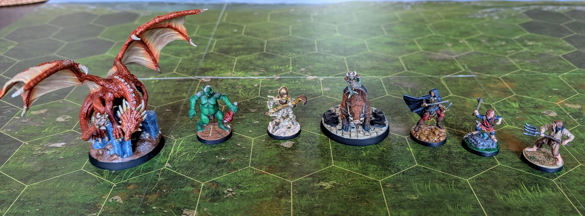

First Seven Minis
Read in another language: 

Lessons learned from the begining of the adventure.

Even amateur painting quality is better than bare plastic. It makes you want to play even more.
Quick math: it took me about 3 months to paint 7 miniatures. At this pace, painting the whole game will take roughly 3 years. Let's see if this prediction holds true.
Key takeaways so far:
-
Artistry like this follows specific rules that anyone can learn. Following these rules will lead to decent results.
-
No need to sweat over the details or quality, as long as you're having fun. Time flows surprisingly fast when you're laser-focused on completing the next miniature.
-
Online video tutorials have limited value unless they demonstrate painting something very similar to your project (so far I've found one YouTuber who does this). Most tutorial creators use premium-quality miniatures and equipment that I either can't access or don't want to invest in. Naturally, their tutorials wouldn't look as spectacular if they used lower-quality materials.
-
A quality paintbrush is the most crucial piece of equipment. While you can compromise on other materials, a poor-quality brush will limit your progress.
-
If you have a scientific mind and are new to artistic work, this hobby will challenge your brain in a positive way. You'll develop skills from parts of your mind that don't get much exercise normally. It's like the reverse of teaching a creative friend how to code.
I hope this helps. Pick up that brush and see where it takes you.